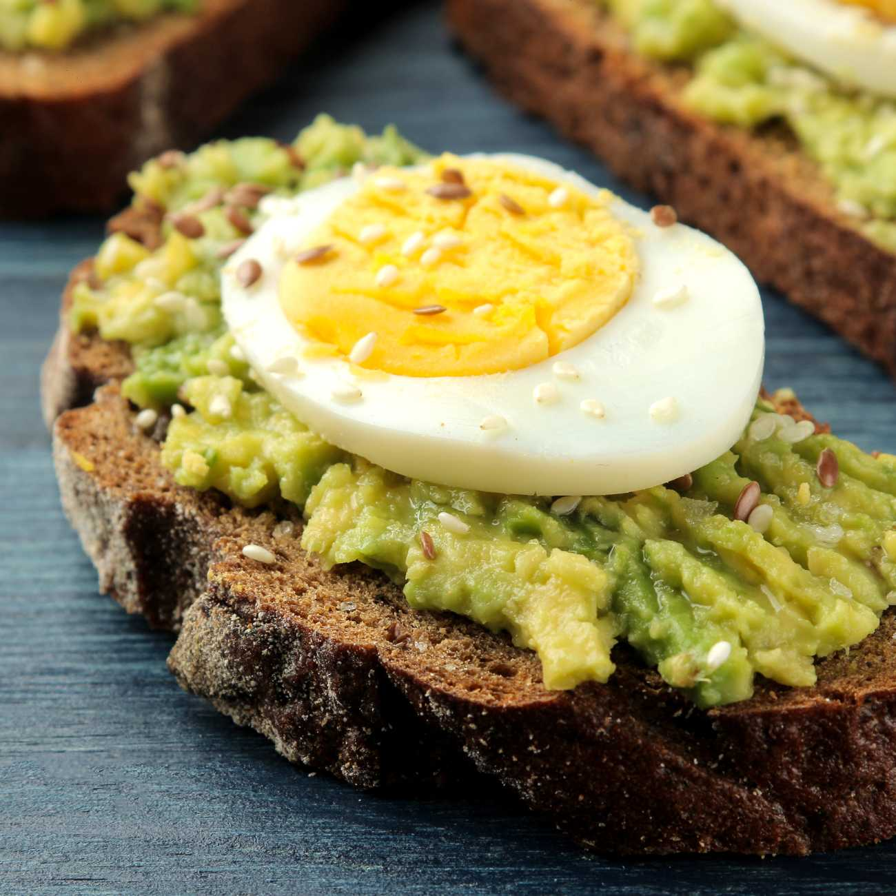

Receta de Tostadas con Aguacate

Caracteristicas
- Dificultad: Fácil
- Raciones: 1
- Tiempo: 10m
- Para 1 persona
- Coste: Bajo
Ingredientes
| Ingrediente | Cantidad | Notas |
|---|---|---|
| Huevo | 1 ud | Para hervir |
| Pan | 1 ud | Para Cortar |
| Aguacate | 1/2 | Pelar y triturar |
| Sal | Al gusto | Opcional |
| Pimienta Negra | Al gusto | Opcional |
Elaboración
Primero, cortar rebanadas de pan integral de aproximadamente 1,5 cm de grosor y tostar hasta obtener una superficie dorada y crujiente. Mientras tanto, pelar y triturar el aguacate con un tenedor hasta lograr una textura cremosa. Cocinar el huevo al gusto (frito, escalfado o hervido). Extender el aguacate sobre el pan, colocar el huevo encima y sazonar con sal y pimienta al gusto